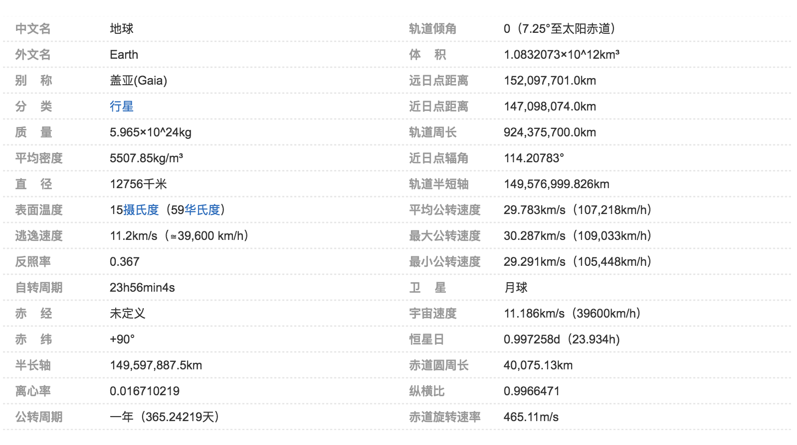

诞生和演化
第一阶段为地球圈层形成时期，其时限大致距今4600至4200Ma。46亿年前诞生时候的地球与21世纪的大不相同。根据科学家推断，地球形成之初是一个由炽热液体物质（主要为岩浆）组成的炽热的球。随着时间的推移，地表的温度不断下降，固态的地核逐渐形成。密度大的物质向地心移动，密度小的物质（岩石等）浮在地球表面，这就形成了一个表面主要由岩石组成的地球。
第二阶段为太古宙、元古宙时期。其时限距今4200-543Ma。地球自不间断地向外释放能量，由高温岩浆不断喷发释放的水蒸气，二氧化碳等气体构成了非常稀薄的早期大气层---原始大气。随着原始大气中的水蒸气的不断增多，越来越多的水蒸气凝结成小水滴，再汇聚成雨水落入地表。就这样，原始的海洋形成了。
第三阶段为显生宙时期，其时限由543Ma至今。显生宙延续的时间相对短暂，但这一时期生物及其繁盛，地质演化十分迅速，地质作用丰富多彩，加之地质体遍布全球各地，广泛保存，可以极好的对其进行观察和研究，为地质科学的主要研究对象，并建立起了地质学的基本理论和基础知识。
人类科学家已经能够重建地球过去有关的资料。太阳系的物质起源于45.672亿±60万年前，而大约在45.4亿年前（误差约1%），地球和太阳系内的其他行星开始在太阳星云——太阳形成后残留下来的气体与尘埃形成的宇宙中看地球 圆盘状——内形成。通过吸积的过程，地球经过1至2千万年的时间，大致上已经完全成形。从最初熔融的状态，地球的外层先冷却凝固成固体的地壳，水也开始在大气层中累积。月亮形成的较晚，大约是45.3亿年前，一颗火星大小，质量约为地球10%的天体（通常称为忒伊亚）与地球发生致命性的碰撞。这个天体的部分质量与地球结合，还有一部分飞溅入太空中，并且有足够的物质进入轨道形成了月球。释放出的气体和火山的活动产生原始的大气层，小行星、较大的原行星、彗星和海王星外天体等携带来的水，使地球的水份增加，冷凝的水产生海洋。新形成的太阳光度只有太阳的70%，但是有证据显示早期的海洋依然是液态的，这称为微弱年轻太阳谬论矛盾。温室效应和较高太阳活动的组合，提高了地球表面的温度，阻止了海洋的凝结。
有两个主要的理论提出大陆的成长：稳定的成长到现代和在早期的历史中快速的成长。研究显示第二种学说比较可能，早期的地壳是快速成长的，随后跟着长期稳定的大陆地区。在时间尺度上的最后数亿年间，表面不断的重塑自己，大陆持续的形成和分裂。在表面迁徙的大陆，偶尔会结成超大陆。大约在7.5亿年前，已知最早的一个超大陆罗迪尼亚开始分裂，稍后又在6亿至5.4亿年时合并成潘诺西亚大陆，最后是1.8亿年前开始分裂的盘古大陆。